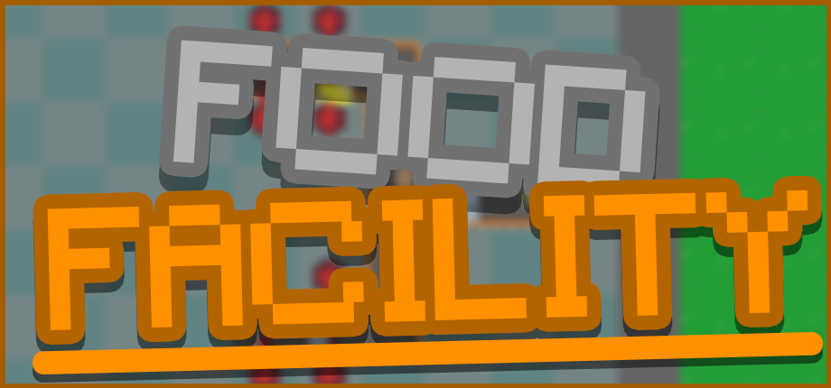

My game Food Facility.

Food Facility is a game where you build a complex factory to produce food as efficiently as possible—all within the tight space you're given.
Contracts.
One of the main features in Food Facility is the contract system. It’s the primary way you’ll earn money. Basically, you accept a contract — let’s say, make 26 cakes — and when you complete it, you get paid.
Workers.
WARNING: The Worker system is in active development, things may change.
Workers, like in every factory, are crucial to sustaining your facility. They can clean up messes, repair broken parts, build components faster, and more. Workers are very useful and essential in this game.
How it started.
The development of Food Facility started in May 2025. Back then, it was supposed to be a simple little factory game... but it turned into something I could never have imagined.
The Process.
Back in May, my original idea was that there would be a player who could walk over to a button and press it to purchase something... there wasn’t any free build. That was it.
However, I realized that it wasn’t very fun, so I decided to allow the player to build anywhere. Now, it was fun — and two months later, the game has really changed.
What now?.
Currently I'm working on adding the core features into the game like, workers, contracts, etc